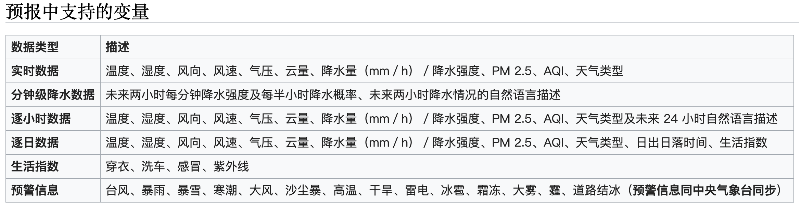
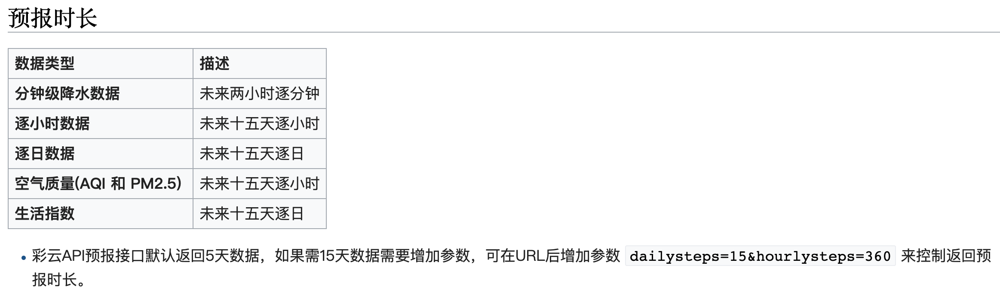
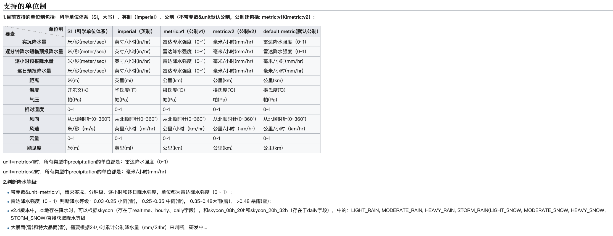

以下接口的token来自于Github
通用预报接口：https://api.caiyunapp.com/v2.5/PPhPMBzKtbn72fnI/115.4033,43.2309/weather.json
实况天气接口：https://api.caiyunapp.com/v2.5/PPhPMBzKtbn72fnI/115.4033,43.2309/realtime.json
分钟级降雨预报接口：https://api.caiyunapp.com/v2.5/PPhPMBzKtbn72fnI/115.4033,43.2309/minutely.json
小时级预报接口：https://api.caiyunapp.com/v2.5/PPhPMBzKtbn72fnI/115.4033,43.2309/hourly.json
天级预报接口：https://api.caiyunapp.com/v2.5/PPhPMBzKtbn72fnI/115.4033,43.2309/daily.json


